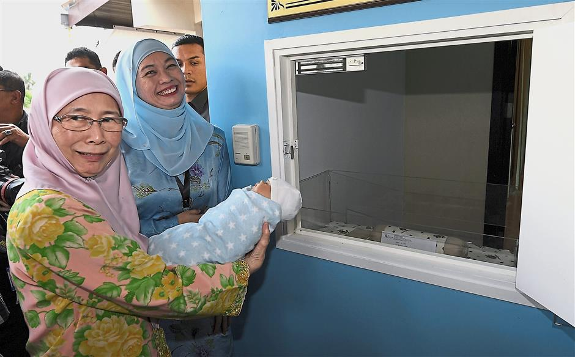
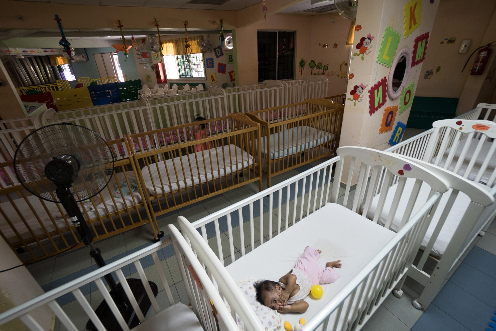
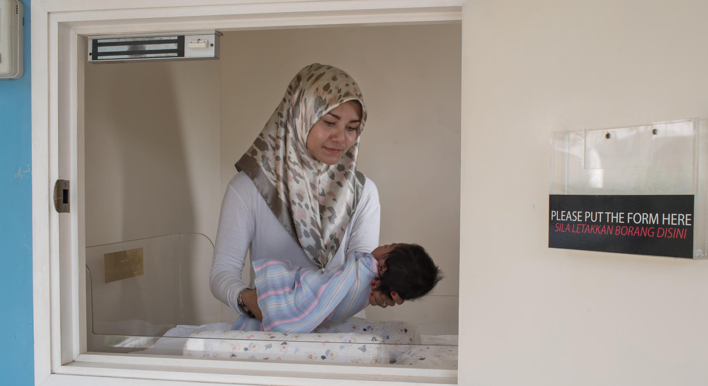

| HOME | ABOUT ORPHANCARE | JOIN US | FUNDRAISE WITH US | COLLABORATION WITH US | DONATE | BABY HATCH CENTERS | CONTACT US | THE WEBSITE CREATOR |
Low cost, high impact charity
We work closely with the Ministry of Women, Family and Community Development and the Department of Social Welfare and are partners with Lumos, an international non-profit organisation that advises nations about deinstitutionalisation (DI), to implement the transition from institutional care to family based care.
  